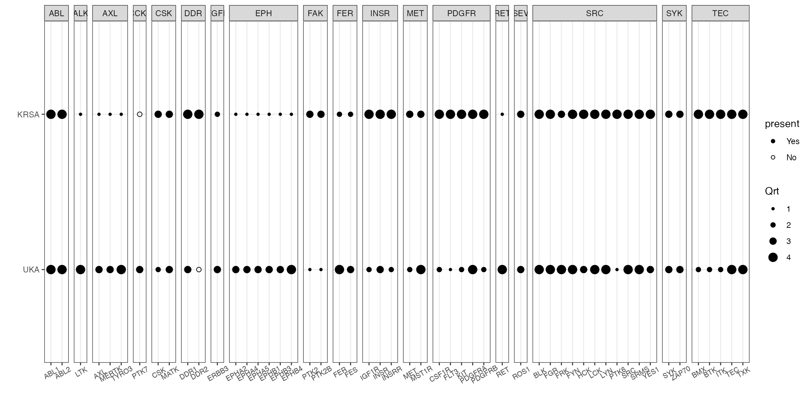

creedenzymatic.Rmdcreedenzymatic is a pipeline R package to combine, standardize and visualize kinomic analyses from different tools (KRSA, UKA, KEA3, PTM-SEA)
The different kinomic tools (KRSA, UKA, KEA3, PTM-SEA) produce different outputs with various scoring metrics. To standardize the input in this package, we want to extract only two variables from each tool: Kinase and Score.
Kinase: will be main identifier used in each tool. For example, in KRSA this variable will indicating kinase family, but with UKA it will be individual kinases.
Score: The main metric used in the corresponding tool. For example, in KRSA this will be a Z score, in UKA it will be either kinase statistic or kinase score.
The format of the input is a dataframe with two columns: Kinase and Score. Many of these tools give outputs with many columns beyond these two. So, we need to convert the output from these tools to fit the input format needed here. An example from KRSA and UKA is show below.
Usually the final KRSA output has many columns like: Kinase, SamplingAverage, SD, Z, … etc. So, we need to read that file and only select Kinase and Z score columns, and then rename the Z score column to “Score”
# reading an example of KRSA output
krsa_ex <- read_delim("data_files/KRSA_ex.txt", delim = "\t")
krsa_ex
#> # A tibble: 24 x 5
#> Kinase Observed SamplingAvg SD Z
#> <chr> <dbl> <dbl> <dbl> <dbl>
#> 1 DDR 31 21.1 2.65 3.71
#> 2 TEC 92 81.9 3.09 3.26
#> 3 SRC 101 94.6 2.70 2.36
#> 4 ABL 44 37.6 3.14 2.03
#> 5 PDGFR 86 80.0 3.19 1.89
#> 6 INSR 24 19.4 2.51 1.83
#> 7 FRK 11 7.90 1.70 1.83
#> 8 MET 23 20.5 2.61 0.945
#> 9 SYK 78 75.0 3.23 0.930
#> 10 CSK 45 42.0 3.34 0.912
#> # … with 14 more rowsNow we select the Kinase and Z score columns, and then rename the Z score column to “Score”
# selecting the Kinase and Z columns, and renaming Z to Score
krsa_ex %>% select(Kinase, Z) %>%
rename(Score = Z) -> krsa_ex
krsa_ex
#> # A tibble: 24 x 2
#> Kinase Score
#> <chr> <dbl>
#> 1 DDR 3.71
#> 2 TEC 3.26
#> 3 SRC 2.36
#> 4 ABL 2.03
#> 5 PDGFR 1.89
#> 6 INSR 1.83
#> 7 FRK 1.83
#> 8 MET 0.945
#> 9 SYK 0.930
#> 10 CSK 0.912
#> # … with 14 more rowsWe do the same with the UKA output, take raw output and select kinase and either the kinase statistic or final score as the scoring metric
# reading an example of UKA output
uka_ex <- read_delim("data_files/UKA_ex.txt", delim = "\t")
uka_ex
#> # A tibble: 76 x 10
#> `Kinase Uniprot… `Kinase Name` `Mean Specifici… `Mean Significa…
#> <chr> <chr> <dbl> <dbl>
#> 1 P06239 Lck 1.82 1.03
#> 2 P07948 Lyn 1.54 1.03
#> 3 Q04912 Ron 1.07 1.03
#> 4 P42685 FRK 1.30 1.03
#> 5 P00519 Abl 1.33 1.03
#> 6 Q06418 Tyro3/Sky 1.12 1.03
#> 7 P12931 Src 0.994 1.03
#> 8 P16234 PDGFR[alpha] 0.910 1.03
#> 9 P42684 Arg 0.959 1.03
#> 10 P06241 Fyn 1.04 1.03
#> # … with 66 more rows, and 6 more variables: `Mean Final Score` <dbl>, `Median
#> # Final score` <dbl>, `Mean Kinase Statistic` <dbl>, `Median Kinase
#> # Statistic` <dbl>, `SD Kinase Statitistic` <dbl>, `Mean peptide set
#> # size` <dbl>Let’s say we want the final score as the metric we want to use, so we select the two columns: kinase and median final score
# selecting the Kinase and kinase statistic columns, and renaming kinase statistic to Score
uka_ex %>% select(`Kinase Name`, `Median Final score`) %>%
rename(Kinase = `Kinase Name`, Score = `Median Final score`) -> uka_ex
uka_ex
#> # A tibble: 76 x 2
#> Kinase Score
#> <chr> <dbl>
#> 1 Lck 2.77
#> 2 Lyn 2.52
#> 3 Ron 2.50
#> 4 FRK 2.35
#> 5 Abl 2.29
#> 6 Tyro3/Sky 2.19
#> 7 Src 2.07
#> 8 PDGFR[alpha] 2.06
#> 9 Arg 1.97
#> 10 Fyn 1.95
#> # … with 66 more rowsThere are dedicated functions to read and rank KRSA and UKA tables in the creedenzymatic package (read_krsa, read_uka). These two functions will check the input format (must include two columns: Kinase and Score) and then will the rank_kinases function with the specified arguments. The argument are trns and sort. The trns argument is for transformation of the score, the values accepted for this argument are abs and raw (abs: use absolute values of scores, raw: no transformation). The sort argument accepts either asc or desc (ascending and descending)
# read and rank the KRSA table and use absolute values and descending sorting
read_krsa(krsa_ex, trns = "abs", sort = "desc") -> krsa_table_ranked
# read and rank the UKA table and use absolute values and descending sorting
read_uka(uka_ex, trns = "abs", sort = "desc") -> uka_table_ranked
# preview of a ranked KRSA table
krsa_table_ranked
#> # A tibble: 24 x 6
#> Kinase Score Rank Method Perc Qrt
#> <chr> <dbl> <int> <chr> <dbl> <dbl>
#> 1 DDR 3.71 1 KRSA 1 1
#> 2 TEC 3.26 2 KRSA 0.957 1
#> 3 SRC 2.36 3 KRSA 0.913 1
#> 4 ABL 2.03 4 KRSA 0.870 1
#> 5 PDGFR 1.89 5 KRSA 0.826 1
#> 6 INSR 1.83 6 KRSA 0.783 1
#> 7 FRK 1.83 7 KRSA 0.739 2
#> 8 MET 0.945 8 KRSA 0.696 2
#> 9 SYK 0.930 9 KRSA 0.652 2
#> 10 CSK 0.912 10 KRSA 0.609 2
#> # … with 14 more rowsNow we combine the ranked tables into one datframe using the combine_tools() function.
# combine ranked tables
combine_tools(KRSA_df = krsa_table_ranked, UKA_df = uka_table_ranked) -> combined_df
combined_df
#> # A tibble: 152 x 8
#> Kinase Score Rank Method Perc Qrt Uniprot_Gene KinaseFamily
#> <chr> <dbl> <int> <chr> <dbl> <dbl> <chr> <chr>
#> 1 Lck 2.77 1 UKA 1 1 LCK SRC
#> 2 Lyn 2.52 2 UKA 0.987 1 LYN SRC
#> 3 Ron 2.50 3 UKA 0.973 1 MST1R MET
#> 4 FRK 2.35 4 UKA 0.96 1 FRK FRK
#> 5 Abl 2.29 5 UKA 0.947 1 ABL1 ABL
#> 6 Tyro3/Sky 2.19 6 UKA 0.933 1 TYRO3 AXL
#> 7 Src 2.07 7 UKA 0.92 1 SRC SRC
#> 8 PDGFR[alpha] 2.06 8 UKA 0.907 1 PDGFRA PDGFR
#> 9 Arg 1.97 9 UKA 0.893 1 ABL2 ABL
#> 10 Fyn 1.95 10 UKA 0.88 1 FYN SRC
#> # … with 142 more rows
# to save file
# write_delim(combined_df,"ce_combined_ranked_file.txt", delim = "\t")We can visualize the results using the quartile_figure() function (which will return a ggplot). Let’s we want to plot all of the kinases found in quartile 1 or 2 either in KRSA or UKA.
# filter out kinases found in quartile 1 or 2 either in KRSA or UKA and use the quartile_figure() for visualization
combined_df %>% filter(Qrt <= 2) %>%
pull(Uniprot_Gene) %>% unique() -> sig_kinases
combined_df %>%
filter(Uniprot_Gene %in% sig_kinases) %>%
quartile_figure()